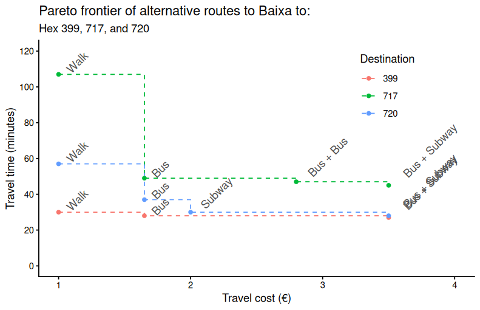
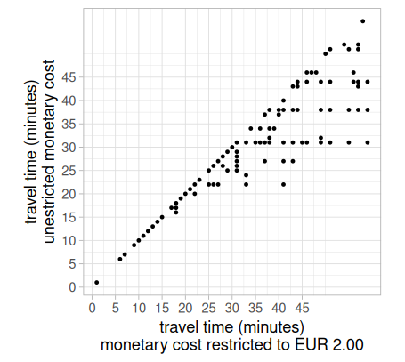
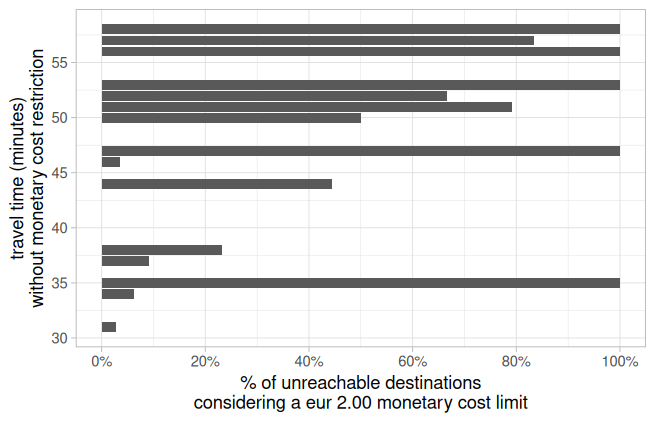
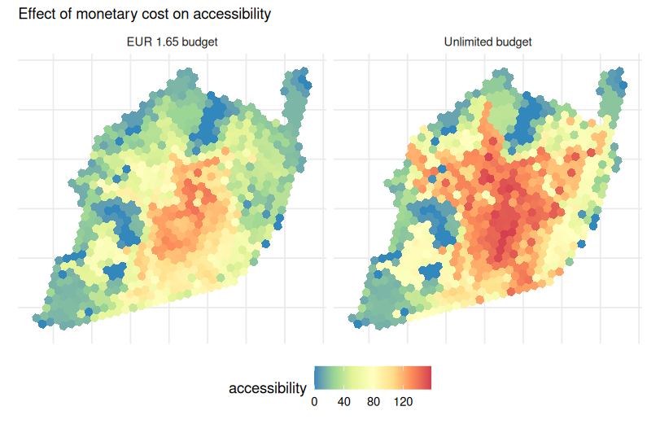
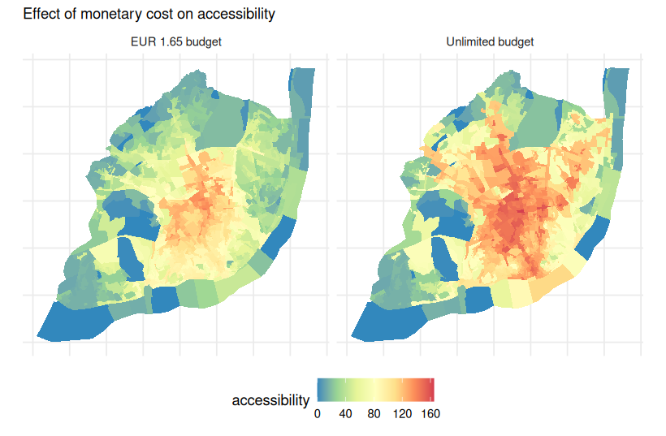

# create basic fare structure
fare_structure <- setup_fare_structure(r5r_lisboa,
base_fare = 1.65,
by = "MODE")
# update the cost of bus and subway fares
fare_structure$fares_per_type <- fare_structure$fares_per_type |>
mutate(fare = case_when(
type == "BUS" ~ 1.65,
type == "SUBWAY" ~ 2.00, # imagine it is more expensive
TRUE ~ fare # keep existing fare if no condition matches
))
# update the cost of transfers
fare_structure$fares_per_transfer <- fare_structure$fares_per_transfer |>
mutate(fare = case_when(
first_leg == "BUS" & second_leg == "BUS" ~ 2.80, # extra cost for 2 trips
first_leg == "SUBWAY" & second_leg == "SUBWAY" ~ 2.00, # no extra cost
first_leg != second_leg ~ 3.50,
TRUE ~ fare
))
# update transfer_time_allowance to 60 minutes
fare_structure$transfer_time_allowance <- 60
fare_structure$fares_per_type = fare_structure$fares_per_type |>
mutate(
unlimited_transfers = if_else(type == "SUBWAY", TRUE, unlimited_transfers),
allow_same_route_transfer = if_else(type == "SUBWAY", TRUE, allow_same_route_transfer)
)
# save fare rules to temp file
# r5r::write_fare_structure(fare_structure, file_path = "data/Lisbon/fares_lisbon.zip")
# fare_structure <- r5r::read_fare_structure("data/Lisbon/fares_lisbon.zip")Pareto frontier
Fares and accessibility
See the r5r vignettes “Accounting for monetary costs” and “Trade-offs between travel time and monetary cost” (Pereira et al. 2021)
Create rules for an operator
In this case, I am creating random rules for fares, considering the mode, the transfers, and changing between modes.
Calculating a pareto_frontier()
In this example, we calculate the Pareto frontier from all origins to downtown (Baixa) considering multiple cutoffs of monetary costs:
- €1, which would only allow for walking trips
- €1.65, which would only allow for bus trips
- €2.00, which would allow for a single or multiple subway trips
- €2.80, which would allow for bus + bus
- €3.50, which would allow for walking + bus + subway
departure_datetime <- as.POSIXct("13-11-2024 10:00:00",
format = "%d-%m-%Y %H:%M:%S")
prtf <- pareto_frontier(
r5r_lisboa,
origins = POINTShex,
destinations = BAIXA,
mode = c("WALK", "TRANSIT"),
departure_datetime = departure_datetime,
fare_structure = fare_structure,
fare_cutoffs = c(1, 1.65, 2.0, 2.8, 3.5),
progress = TRUE
)Code
# select some origin and destinations
pf2 <- prtf |> filter(from_id %in% c("717", "720", "399"))
# recode modes
pf2 <- pf2 |>
mutate(
modes = case_when(
monetary_cost == 1 ~ "Walk",
monetary_cost == 1.65 ~ "Bus",
monetary_cost == 2.0 ~ "Subway",
monetary_cost == 2.80 ~ "Bus + Bus",
monetary_cost == 3.5 ~ "Bus + Subway"
# TRUE ~ "Bus"
)
)
ggplot(data=pf2, aes(x=monetary_cost, y=travel_time, color=from_id, label = modes)) +
geom_step(linetype = "dashed") +
geom_point() +
geom_text(color='gray30', hjust = -.2, nudge_x = 0.05, angle = 45) +
labs(title='Pareto frontier of alternative routes to Baixa to:',
subtitle = 'Hex 399, 717, and 720',
color='Destination') +
scale_x_continuous(name="Travel cost (€)", breaks=seq(0,4,1)) +
scale_y_continuous(name="Travel time (minutes)", breaks=seq(0,120,20)) +
coord_cartesian(xlim = c(1,4), ylim = c(0, 120)) +
theme_classic() + theme(legend.position=c(.8,0.8))
An optimum route alternative means that one cannot make a faster trip without increasing costs, and one cannot make a cheaper trip without increasing travel time.
# calculate travel times function
calculate_travel_times <- function(fare) {
ttm_df <- travel_time_matrix(
r5r_lisboa,
origins = POINTShex,
destinations = BAIXA,
mode = c("WALK", "TRANSIT"),
departure_datetime = departure_datetime,
time_window = 1,
fare_structure = fare_structure,
max_fare = fare,
max_trip_duration = 60,
max_walk_time = 15
)
return(ttm_df)
}
# calculate travel times, and combine results
ttm <- calculate_travel_times(fare = Inf) # no budget restriction
ttm_200 <- calculate_travel_times(fare = 2) # 2 euro
# merge results
ttm <- ttm |>
left_join(
ttm_200 |> select(from_id, to_id, travel_time_p50),
by = c("from_id", "to_id"),
suffix = c("", "_200")
) |>
mutate(
travel_time_200 = travel_time_p50_200,
travel_time_unl = travel_time_p50
) |>
select(-travel_time_p50, -travel_time_p50_200)
tail(ttm, 10)Code
# plot of overall travel time differences between limited and unlimited cost travel time matrices
time_difference <- ttm %>%
filter(!is.na(travel_time_200)) %>%
group_by(travel_time_unl, travel_time_200) %>%
summarise(count = n(), .groups = "drop")
p1 <- ggplot(time_difference, aes(y = travel_time_unl, x = travel_time_200)) +
geom_point(size = 0.7) +
coord_fixed() +
scale_x_continuous(breaks = seq(0, 45, 5)) +
scale_y_continuous(breaks = seq(0, 45, 5)) +
theme_light() +
theme(legend.position = "none") +
labs(y = "travel time (minutes)\nunestricted monetary cost",
x = "travel time (minutes)\nmonetary cost restricted to EUR 2.00"
)
# plot of unreachable destinations when the monetary cost limit is too low
unreachable <- ttm %>%
group_by(travel_time_unl, missing = is.na(travel_time_200)) %>%
summarise(count = n(), .groups = "drop_last") %>% # keep grouping by travel_time_unl
mutate(perc = count / sum(count, na.rm = TRUE)) %>%
ungroup() %>%
filter(missing) %>% # keep only rows where travel_time_200 was NA
tidyr::drop_na()
p2 <- ggplot(unreachable, aes(x=travel_time_unl, y=perc)) +
geom_col() +
coord_flip() +
scale_x_continuous(breaks = seq(0, 60, 5)) +
scale_y_continuous(limits = c(0, 1), breaks = seq(0, 1, 0.2),
labels = paste0(seq(0, 100, 20), "%")) +
theme_light() +
labs(x = "travel time (minutes)\nwithout monetary cost restriction",
y = "% of unreachable destinations\nconsidering a eur 2.00 monetary cost limit")

Calculating accessibility with monetary cost
To Healthcare facilities
AREAS = readRDS("data/Lisbon/GRIDhex_data.rds")
AREAS_df = AREAS |> st_drop_geometry()# calculate accessibility function
calculate_accessibility <- function(fare, fare_string) {
access_df <- accessibility(
r5r_lisboa,
origins = AREAS_df,
destinations = AREAS_df,
mode = c("WALK", "TRANSIT"),
departure_datetime = as.POSIXct(
"13-11-2024 10:00:00",
format = "%d-%m-%Y %H:%M:%S"),
time_window = 1,
opportunities_colname = "healthcare",
cutoffs = 40,
fare_structure = fare_structure,
max_fare = fare,
max_trip_duration = 60,
max_walk_time = 15,
progress = FALSE)
access_df$max_fare <- fare_string
return(access_df)
}
# calculate accessibility, combine results, and convert to SF
access_165 <- calculate_accessibility(fare=1.65, fare_string="EUR 1.65 budget")
access_unl <- calculate_accessibility(fare=Inf, fare_string="Unlimited budget")
access <- rbind(access_165, access_unl)
# bring geometry
access = access |>
left_join(AREAS_df |>
select(id, h3_address) |>
mutate(id = as.character(id)))
access$geometry = h3jsr::cell_to_polygon(access$h3_address)
access <- st_as_sf(access)Code
# plot accessibility maps
ggplot(data = access) +
geom_sf(aes(fill = accessibility), color=NA, size = 0.2) +
scale_fill_distiller(palette = "Spectral") +
facet_wrap(~max_fare) +
labs(subtitle = "Effect of monetary cost on accessibility") +
theme_minimal() +
theme(legend.position = "bottom",
axis.text = element_blank())

Reading suggestion
The impact of transit monetary costs on transport inequality (Herszenhut et al. 2022)
The cost of equity: Assessing transit accessibility and social disparity using total travel cost (El-Geneidy et al. 2016)
References
El-Geneidy, Ahmed, David Levinson, Ehab Diab, Genevieve Boisjoly, David Verbich, and Charis Loong. 2016. “The Cost of Equity: Assessing Transit Accessibility and Social Disparity Using Total Travel Cost.” Transportation Research Part A: Policy and Practice 91 (September): 302–16. https://doi.org/10.1016/j.tra.2016.07.003.
Herszenhut, Daniel, Rafael H. M. Pereira, Licinio da Silva Portugal, and Matheus Henrique de Sousa Oliveira. 2022. “The Impact of Transit Monetary Costs on Transport Inequality.” Journal of Transport Geography 99 (February): 103309. https://doi.org/10.1016/j.jtrangeo.2022.103309.
Pereira, Rafael H. M., Marcus Saraiva, Daniel Herszenhut, Carlos Kaue Vieira Braga, and Matthew Wigginton Conway. 2021. “R5r: Rapid Realistic Routing on Multimodal Transport Networks with r ⁵ in r.” Findings, March. https://doi.org/10.32866/001c.21262.